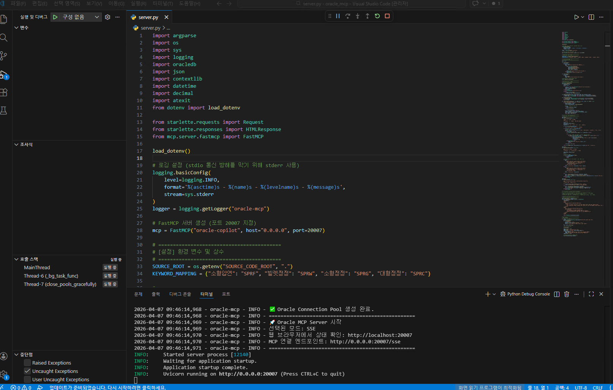
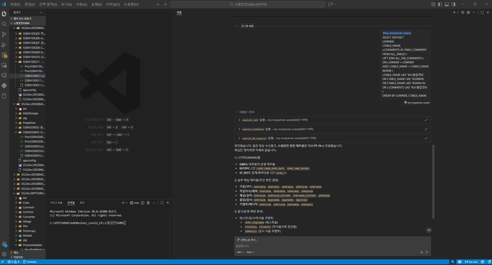

AI-WORKER 인증 과제
오라클 MCP 서버 구축
AI IDE(GitHub Copilot)가 사내 Oracle DB 스키마를 실시간으로 참조할 수 있는 MCP 서버를 직접 개발하여, 할루시네이션으로 인한 반복 디버깅과 컨텍스트 스위칭 낭비를 근본적으로 제거했습니다.
종합 점수
문제 정의 · 배경
기존의 어려움
GitHub Copilot 도입 후에도 사내 Oracle DB 정보가 연동되지 않아, AI가 존재하지 않는 테이블·컬럼을 생성하는 할루시네이션이 빈번하게 발생했습니다. 잘못된 SQL을 교정하기 위해 개발자가 IDE와 DB 클라이언트를 수시로 오가는 컨텍스트 스위칭 비용이 생산성 향상을 가로막았습니다.
AI로 해결한 방식
AI 도구의 표준 컨텍스트 확장 기술인 MCP(Model Context Protocol) 기반 Oracle DB 연동 서버를 Python으로 직접 개발했습니다. AI가 코드 작성 시점에 실제 DB 스키마를 동적으로 조회하여 정확한 SQL·코드를 생성합니다. 프롬프트에 스키마를 붙여넣는 방식 대신 MCP로 필요할 때만 조회하여 토큰 효율도 높였습니다.
시각 증빙 자료
MCP 서버 (소스코드 구조)

MCP 클라이언트 (사용자 화면)

평가 체크리스트
① AI 활용 유형
② 자동화 대상
IDE ↔ DB 클라이언트 컨텍스트 스위칭이 0회로 감소하고, AI 할루시네이션 교정 시간이 실질적으로 줄어든 점이 확인됩니다. 다만 절감 시간의 구체적 수치(예: 1회당 N분 절감)가 명시되지 않아 정량적 검증이 아쉽습니다.
AI 도입 후 오히려 생산성이 저하되는 역설적 문제를 MCP로 근본 해결한 아이디어가 탁월합니다. 보안(바인드 변수, SELECT 전용, RCE 방지)·실용성·기술 성장을 모두 고려한 선택 근거가 명쾌합니다.
Oracle DB를 사용하는 사내 전 팀에 적용 가능하며, 비개발자도 자연어로 DB를 조회할 수 있습니다. PDF 가이드가 존재하나 MCP 클라이언트 설정 등 일정 수준의 기술 진입 장벽이 남아있어 확산 속도에 제약이 있습니다.
AI 활용 고도화라는 조직 핵심 방향과 직접 연결되며, 개인 편의를 넘어 팀 전체 개발 인프라를 개선한 점이 돋보입니다. 현재 팀 내 실제 배포·활용 현황이 더 명확히 드러나면 평가가 더 높아질 수 있습니다.
주요 기능
DB 객체 검색
테이블명·한글 코멘트로 Oracle 테이블을 검색합니다. "소형압연"을 입력하면 SPRF 프리픽스 테이블이 자동 매핑됩니다.
SQL 실행
AI가 생성한 SELECT/WITH 쿼리를 실제 DB에서 즉시 실행합니다. DML은 차단되며 결과는 최대 1,000건으로 제한합니다.
소스코드 검색
XML, Java, Python, SQL 파일에서 키워드를 검색합니다. 메모리 효율적인 Generator 방식으로 대용량 코드베이스도 처리합니다.
DB Connection Pool
min=2/max=5 커넥션 풀로 안정적인 Oracle 연결을 관리합니다. 서버 종료 시 자동으로 안전하게 반환합니다.
SSE/stdio 이중 모드
원격 접속(SSE, 포트 20007)과 로컬 전용(stdio) 두 가지 전송 방식을 지원합니다. Cursor, GitHub Copilot 모두 연결 가능합니다.
보안 설계
모든 쿼리에 바인드 변수 적용으로 SQL Injection을 방지합니다. exec() 기반 원격 코드 실행(RCE) 기능은 삭제되어 보안이 강화됩니다.
AI 활용 방식 · 기술 스택
MCP 프로토콜
Model Context Protocol — AI IDE가 외부 도구(DB, 파일시스템)에 안전하게 접근하는 표준 인터페이스
기술 스택
Python 3.14 · FastMCP · python-oracledb · Starlette · python-dotenv
AI 클라이언트
GitHub Copilot / Cursor (MCP 클라이언트로 이 서버에 연결)
데이터 흐름
개발자 자연어 질문 (IDE)
↓ MCP 프로토콜 (SSE/stdio)
Oracle MCP Server (FastMCP, port 20007)
↓ python-oracledb Connection Pool
사내 Oracle DB (user_tab_comments, 업무 테이블)
↓ JSON 결과 반환
AI IDE — 실제 스키마 기반 정확한 SQL/코드 생성
기대 효과 · 성과
컨텍스트 스위칭
IDE 이탈 없이 DB 스키마 즉시 확인. 개발 흐름이 끊기지 않습니다.
할루시네이션 교정 시간
실제 DB 스키마 기반으로 AI가 정확한 코드 생성. 수동 디버깅 최소화를 목표로 합니다.
적용 가능 범위
Oracle DB 사용 전 팀, AI IDE 환경이라면 동일 MCP 서버로 즉시 확장 가능합니다.